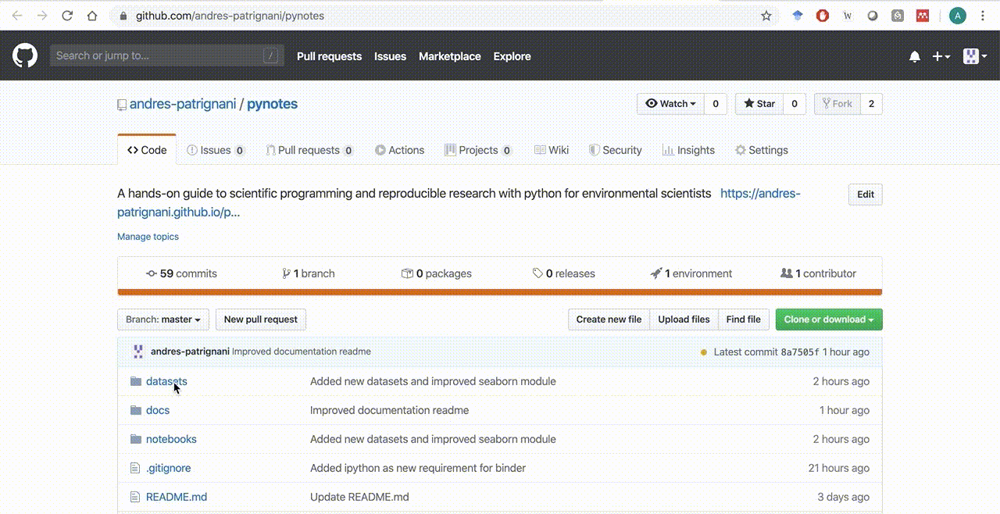

PyNotes in Agriscience
Contents
PyNotes in Agriscience¶
A set of hands-on coding exercises to solve common tasks and simple problems in agricultural sciences.
Audience¶
This material is part of an introductory graduate level course offered to students in plant and soil sciences with little or no programming experience. However, anyone with sufficient motivation, discipline, and interest in learning how to code and adopt reproducible research practices should (hopefully) find the content of this notes useful. The material is aimed at students that are transitioning from spreadsheets analysis to a programming environemnt and that first need to learn basic building blocks before tackling more complicated challenges. Most examples and datasets are in tabular format, so that files can be opened and inspected with common spreadsheet software.
The Python language was selected because it is free, has a relatively straightforard syntax, has been widely adopted by the scientific community, and contains a rich ecosystem of libraries and tools for generating reproducible research.
These notes are intended to be simple and explicit, and code expressions may not be the most efficient or pythonic. As students acquire more experience through the different exercises, they will become more familiar with the syntax, documentation sources, and eventually will be able to write more advanced and elegant code. These notes are part of an introductory level course in scientific programming and reproducible research using live coding lectures
Motivation¶
These notes stem from the need to increase coding literacy in students pursuing a career in agricultural sciences. With the increasing use of sensors and the growing volume of data involved in agronomic decisions, scientific programming is becoming an essential skill for agriscientists that seek to analyze, interpret, and communicate data and research findings.
The three main aspects that motivated this material are:
The lack of online examples including real datasets in agricultural sciences. The material presented in this series of Jupyter notebooks relies entirely on data from published studies in peer-reviwed journals or data collected by the author and students as part of research projects;
The vast amount of existing material about coding is either aimed at the general public with trivial examples or learners familiar with advanced concepts in computer science, both of which have little appeal to graduate students and early career scientists in agricultural sciences that are learning to write code for the first time.
I wanted to create a set of short, interactive, and reproducible scripts in the form of notebooks that students can download and execute anytime. Students can take advantage of tools such as Github and Binder to gain access to the entire material and start coding in a matter of minutes.
Goals¶
Students who successfully complete the material should be able to:
construct effective, well-documented, and error-free scripts and functions.
apply high-level programming to generate publication-quality figures and optimize simple models.
find information independently for self-teaching and problem solving.
learn good programming habits and basic reproducible research practices by following short exercises using real data.
Datasets¶
The datasets used along these notebooks can be found in the /datasets directory of the Github repository. Throughout the examples it is assumed that the Python interpreter of the Jupyter notebook is in the pynotes/notebooks directory, reason why the directories are relative to this path in the exercises, for example: pd.read_csv("../datasets/file.csv").
If you want to follow along an exercise without downloading the entire material, you can always read the data directly from the Github repository, just make sure you get the “Raw” URL link. For example, to read the Anscombe’s dataset:
pd.read_csv('https://raw.githubusercontent.com/andres-patrignani/pynotes/master/datasets/anscombe_quartet.csv')
Follow this video to learn how to obtain the link for the raw data.

About the author¶
Andres Patrignani is an Assistant Professor in Soil Water Processes in the Department of Agronomy at Kansas State University. You can contact me at andrespatrignani@ksu.edu
Role of coding in my career¶
Coding is one of the most important skills that I learned in gradaute school. Coding forced me to break down problems, think logically, and increase attention to seemingly irrelevant details. Coding allowed me to implement soil physical processes and visualize the outcome. Abstract concepts and equations that appeared in manuscripts and books became alive with code. Coding also enabled me to materialize my own ideas into something that other students, lab mates, and colleagues could use.
As a faculty, coding is changing the way I interact with other researchers and advise graduate students. Code reveals the student’s reasoning process and allows me to connect with the student logical (or sometimes illogical) thinking. This way I can precisely identify and correct the points where there is a conceptual misunderstanding. Collaboratively writing code with students is certainly one of the most rewarding experiences for me.
Feedback¶
All the code has been written with teaching in mind. If you spot an important error or a big no-no that should not be taught to students, please share your opinion and suggestions.
For bug reports, code suggestions, and topic requests please open an issue in the Github repository.
For other related issues feel free to contact me at andrespatrignani@ksu.edu
Support¶
The content of this website is partially supported by the Kansas State University Open/Alternative Textbook Initiative
Acknowledgments¶
The content would not be possible without the work of countless students and the honest criticism and detailed feedback from students taking course AGRON 845.
License¶
All the code in these Jupyter notebooks has been written entirely by the author unless noted otherwise. The entire material is available for free under the Creative Commons Attribution-NonCommercial-ShareAlike (CC BY-NC-SA) license